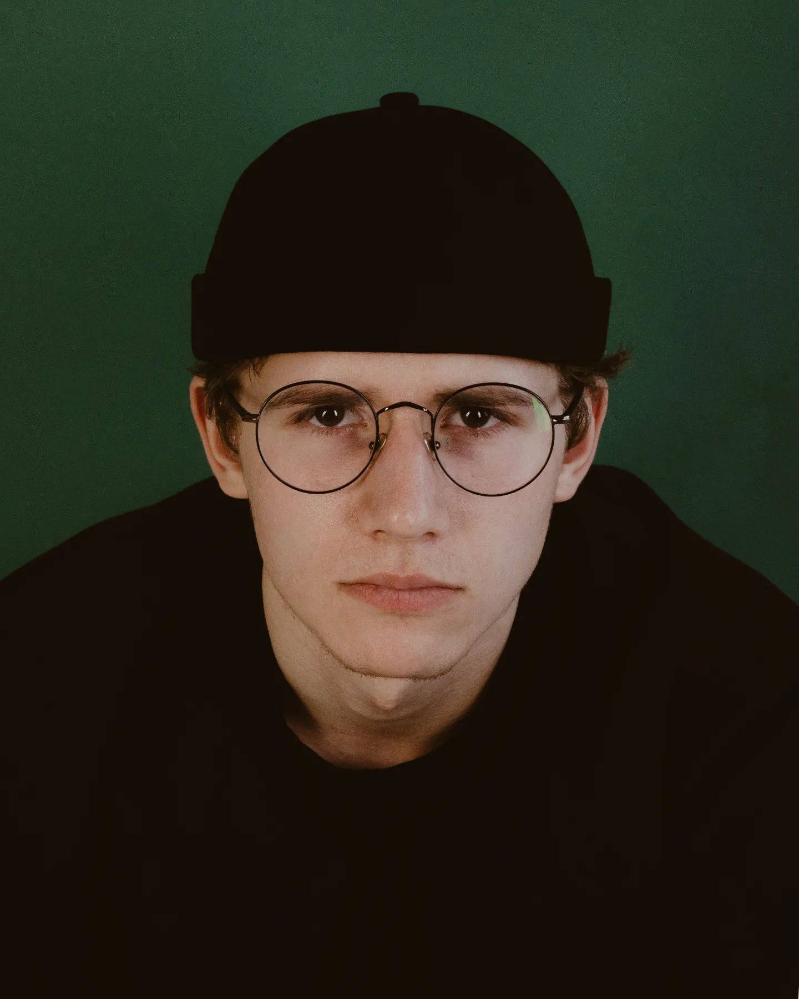

Валентин - це веселий і енергійний чоловік. Завжди на позитивному хвилі, він вміє підняти настрій навіть у найсіріший день. Його посмішка ніколи не залишає байдужими, і завдяки йому будь-яка подія стає яскравішою. Він завжди готовий вислухати та підтримати, що робить його дуже цінним другом.
Іван

Іван - це творча особистість. Він завжди в пошуках нових ідей і вражає своїм художнім підходом до життя. Завдяки йому, будь-який звичайний день може стати неймовірним пригодою. Він не лише талановитий у своєму мистецтві, але й завжди вміє надихати інших на креативність та самовираження.
Данило
Данило - це людина з глибоким інтелектом. Його цікавість до навколишнього світу безмежна, і він завжди готовий вивчати нові речі та ділитися своїми знаннями з оточуючими. В розмові з ним завжди можна відкрити для себе щось нове. При цьому він завжди чуйний і готовий допомогти в складних ситуаціях.